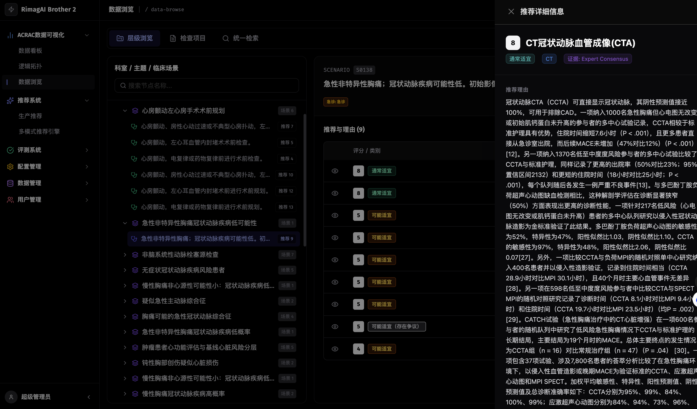
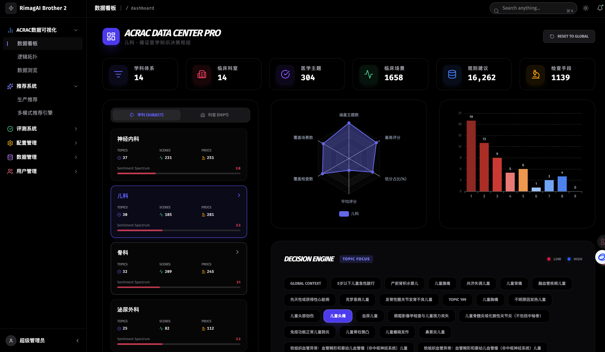

分阶段推理流程
每个阶段独立推理，医生可在任意节点介入确认或修正
1
诊断推理
基于主诉、病史和检查结果，生成鉴别诊断列表及置信度排序
2
检查建议
根据诊断假设推荐必要检查项目，标注 ACR 适宜性等级和辐射剂量
3
用药方案
结合诊断和患者特征推荐用药，自动检查禁忌、相互作用和剂量
4
处置计划
生成综合处置建议，包含随访计划、注意事项和患者教育要点

每个阶段独立推理，医生可在任意节点介入确认或修正
基于主诉、病史和检查结果，生成鉴别诊断列表及置信度排序
根据诊断假设推荐必要检查项目，标注 ACR 适宜性等级和辐射剂量
结合诊断和患者特征推荐用药，自动检查禁忌、相互作用和剂量
生成综合处置建议，包含随访计划、注意事项和患者教育要点
区别于传统 CDSS 的关键特性
每个推荐都附带置信度评分和依据来源。医生清楚知道 AI 的"把握程度"，而非面对一个黑盒结论。
推荐结果关联到具体的临床指南、文献或本院规范。支持一键跳转查看原始依据。
大模型推理之外，本地规则引擎作为确定性兜底。关键禁忌和红线规则零延迟同步执行。
自动整合患者纵向病史、当前就诊信息和 HIS 数据，无需医生手动输入背景信息。
基于 ACR 准则的智能检查方案推荐，减少不必要的辐射暴露
将 ACR 适宜性准则和国内专科共识转化为可计算的知识网络，覆盖 200+ 临床场景。
根据患者临床信息自动匹配最适宜的检查方案，给出适宜性评分（1-9 分）和推荐等级。
在医嘱提交前实时评估检查适宜性，对低适宜性检查给出替代建议，减少不必要辐射。

